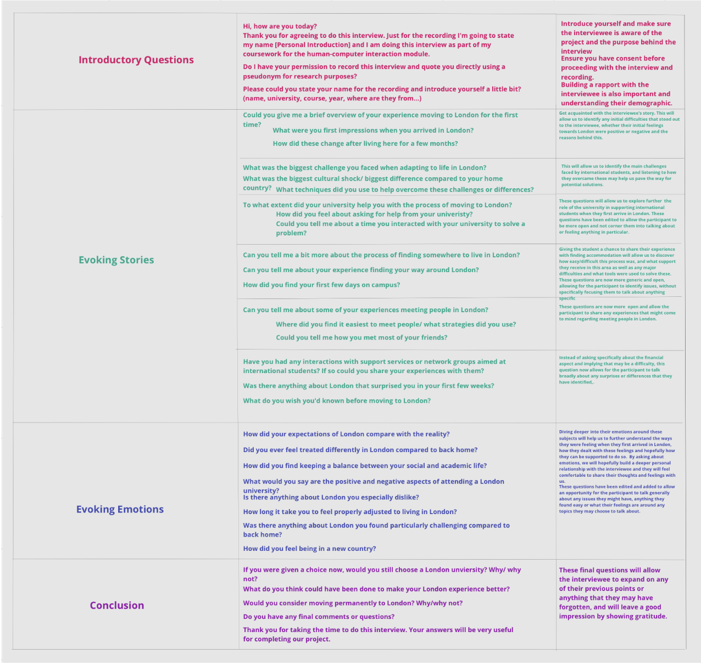
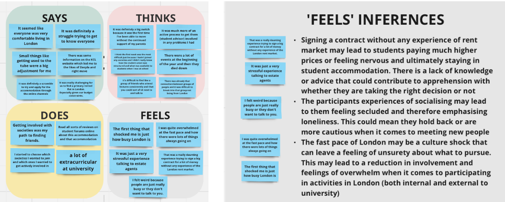
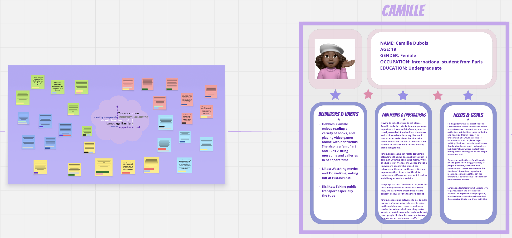
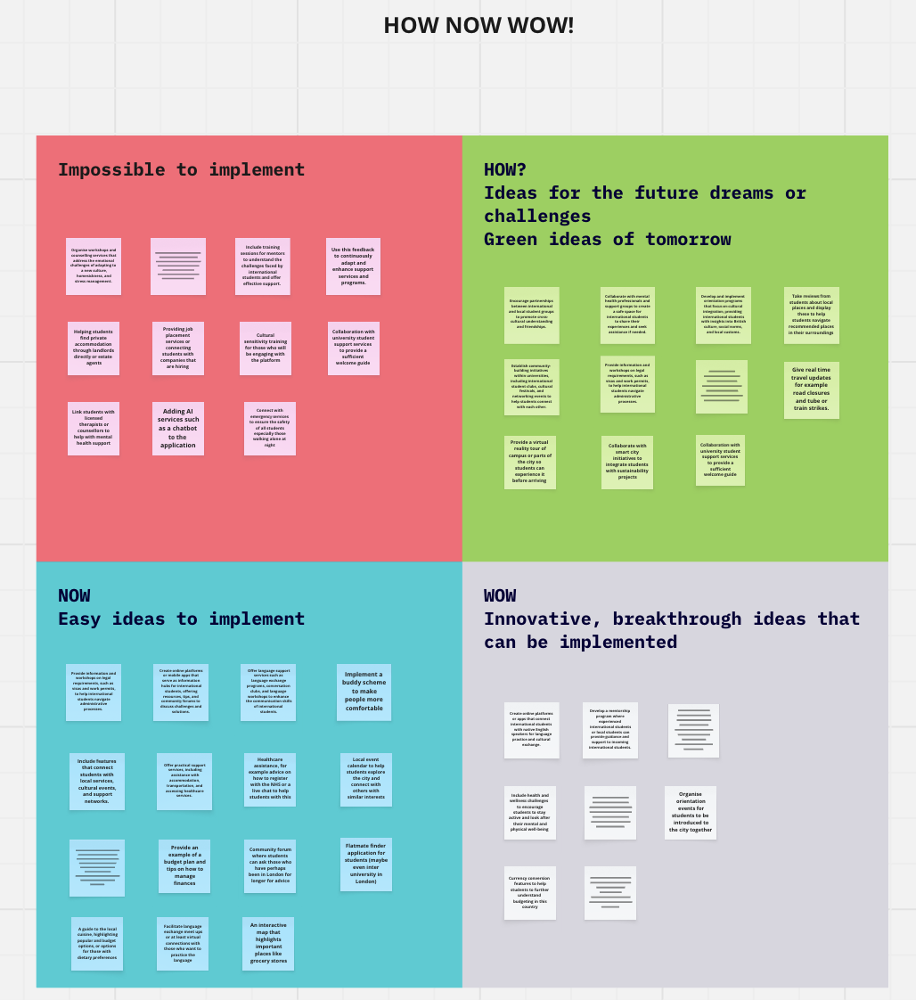
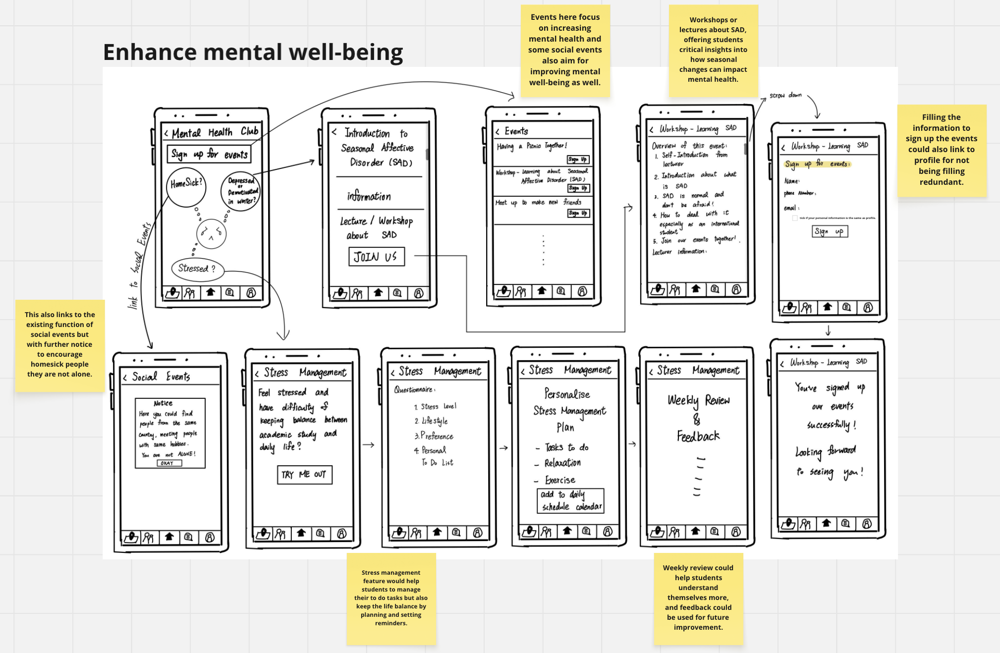
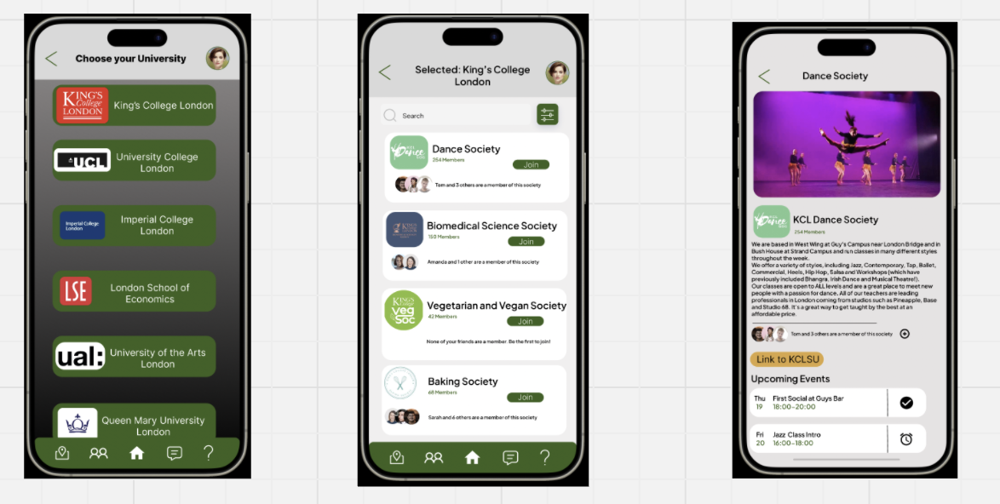

10-week Human-Computer Interaction coursework at King’s College London
End-to-end research and design of a digital hub to help new international students adapt to London life
Focus: Mental health support flow and peer connection experience
Newly arrived students face fragmented info across housing, finance, transport, wellbeing and social life.
We aimed to co-design a central hub that reduces effort, improves clarity and supports faster adaptation.
Understand pain points via interviews and synthesis
Design inclusive experience across key life areas
Validate usefulness and ease of use through evaluation
🔍 Research & Discovery
30+ interviews with international students across campuses
Empathy maps, personas, problem statements covering finance, housing, wellbeing, social, language
Journey mapping to identify high-stress pain points
Ideation workshops using Six Thinking Hats, HMW and How-Now-Wow matrix




💡 Ideation & Storyboarding
Generated and refined ideas using sketching, storyboards, and structured prioritization frameworks.

🛠️ Design & Prototyping
Figma modular flows for accommodation, finance, mental health, social features
Navigation and content hierarchy focused on clarity
Usability testing and heuristic reviews with iteration
My focus: Mental health interface with resource access and peer connection

📈 Outcomes & Impact
Improved task clarity and faster navigation in testing
Positive feedback on tone and accessibility of wellbeing module
Roadmap delivered for long-term integration with university services
🧩 Role & Contribution
Led UX research for mental health module: 5 in-depth interviews, synthesis into personas
Facilitated ideation workshops and aligned team on scope